카카오로 시작하기는 두 앱 모두 설명 바로 아래에 둔다
운영(카카오만 켜짐)에서 생산자 로그인은 '카카오로 시작하기'가 화면 맨 아래 고정 바에 있어 제목·설명 아래가 화면 절반 넘게 비어 있다. 소비자 로그인은 설명 바로 아래 본문에 버튼이 있다. 같은 행동이 두 앱에서 다른 자리에 있다. B안은 생산자도 소비자처럼 본문 안에 둔다. 왼쪽은 main 코드를 로컬에서 띄운 캡처, 오른쪽은 같은 화면의 요소만 옮긴 시안이다.
디자인 무브
- 1
버튼은 설명 바로 아래, 32 띄워서
생산자도 소비자처럼 설명 → 32 → 카카오 버튼. 평가 모드(테스트 계정 목록)에서 생산자는 이미 본문에 있었으니 위 간격만 24 → 32로 소비자와 맞춘다. 버튼 높이는 앱 토큰대로 생산자 56, 소비자 52 그대로.
- 2
개인정보 안내는 버튼 밑 작은 글로
소비자는 버튼 아래 13 보조 글 「카카오에서는 이메일만 받아요…」를 둔다. 생산자는 같은 말이 설명 문단 안에 섞여 있었다. 설명은 「처음이면 카카오로 시작한 뒤 농가 가입 신청을 해요.」 한 문장으로 줄이고, 개인정보 말은 버튼 아래 13으로 옮긴다: 「카카오에서는 이메일만 받아요. 대표자 이름·연락처는 가입 신청에서 입력해요.」
- 3
운영에서는 고정 바를 없앤다
카카오만 있을 때 생산자 하단 바는 버튼이 빠지면 빈 바가 된다. 오류 문구가 없으면 바를 그리지 않고, 사업자 정보 푸터가 화면 맨 아래(지금
Scroll의marginTop: auto)로 내려간다. 오류가 나면 오류 한 줄만 버튼 바로 아래에 보인다(바 대신 본문). - 4
평가 모드: 카카오 → 목록 → '시작하기'는 하단 그대로
평가 모드의 주 행동은 고른 계정으로 들어가는 '○○으로 시작하기'라 하단 고정 바에 남긴다(강조색 버튼은 화면 아래 규칙). 목록 위에 소비자와 같은 이름표 「생산자 테스트 계정을 골라 주세요」, 아래 안내는 소비자와 짝을 맞춰 「소비자는 소비자 앱에서 따로 로그인해요.」
- 5
'처음이세요? 농가로 가입 신청 ›'은 목록 바로 아래 그대로
이 줄은 시드의 '새 생산자' 테스트 계정으로 들어가는 평가용 지름길이라 평가 모드에만 있고, 운영(카카오만)에는 없다(운영에서는 카카오가 곧 가입이고 설명 문장이 그걸 말한다). 위치는 목록·안내 바로 아래, 푸터 위. 자리를 옮기지 않는다.
- 6
소비자는 버튼 위치 그대로, 운영의 고정 바만 선택 정리
소비자 SCR-05는 버튼·간격이 이미 B안이다. 다만 운영에서 하단 고정 바에 글 한 줄(「이용약관·개인정보 처리방침 동의는 처음 가입할 때 받아요 · 테스트 서비스」)만 떠 있다. 두 앱 모두 '운영에는 고정 바 없음'으로 맞추려면 이 말을 버튼 아래 글에 합친다(아래 화면 C, 선택). '테스트 서비스'는 푸터에 이미 있다.
카카오가 바닥에서 설명 아래로 올라온다
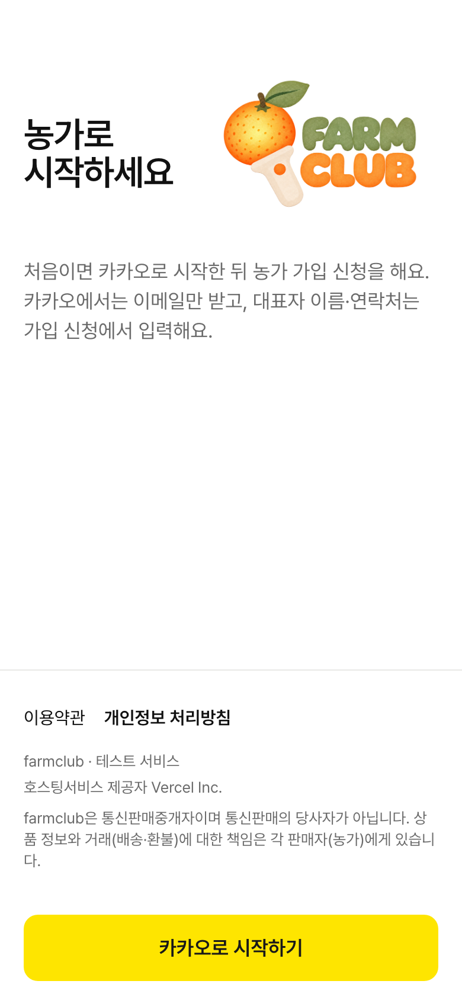
BEFORE: 설명과 버튼 사이가 약 520 비고, 버튼이 사업자 정보 푸터 아래에 있어 법정 고지가 버튼 위로 끼어든다. 소비자 앱과 자리가 다르다.
설명 → 32 → 버튼(56, 노랑 #FEE500, 모서리 12) → 12 → 보조 글 13 가운데.
설명은 한 문장, 개인정보 안내는 버튼 아래로. 문구 내용은 그대로(screens.md SCR-19 문장만 나눔).
하단 고정 바 없음. 푸터는 화면 맨 아래(스크롤 끝). Scroll bottom은 기기 안전 영역 + 16.
?evaluator=1, 평가용 빌드, Mock도 같은 배치)
카카오와 목록은 본문, '시작하기'만 하단
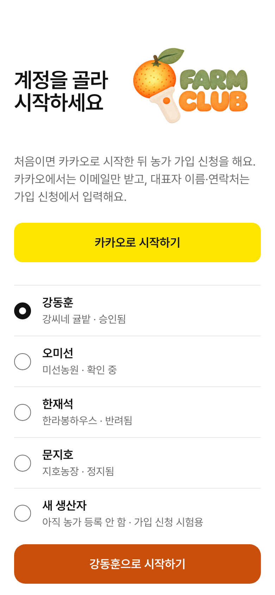
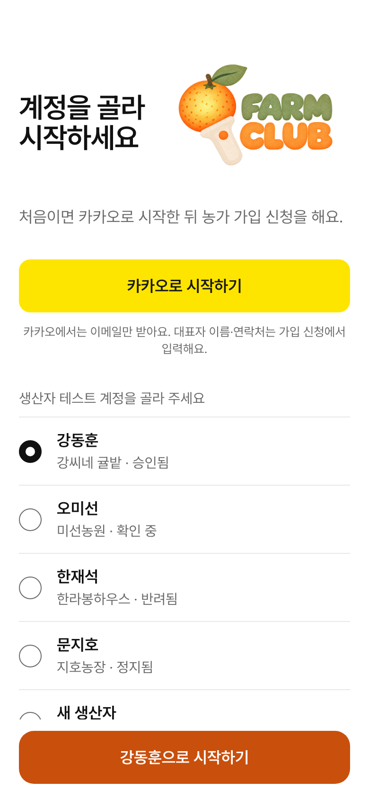
버튼 위 간격 24 → 32(소비자와 같음).
버튼 아래 개인정보 안내 13. 지금은 Mock에서만 'Mock: …' 글이 있었는데, Mock은 그 글을 그대로 두고 운영·평가 모드는 개인정보 안내를 둔다(소비자와 같은 규칙).
목록 위 이름표 「생산자 테스트 계정을 골라 주세요」(15 보조, 소비자 SCR-05와 같은 부품).
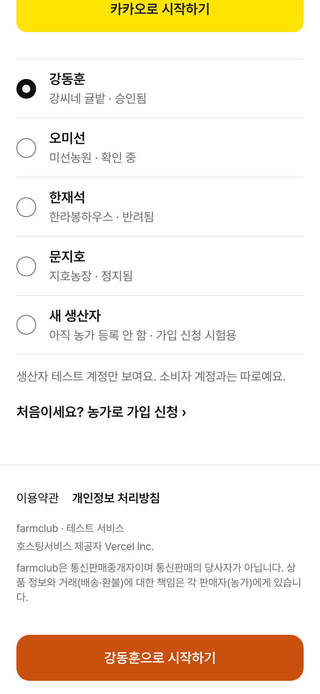
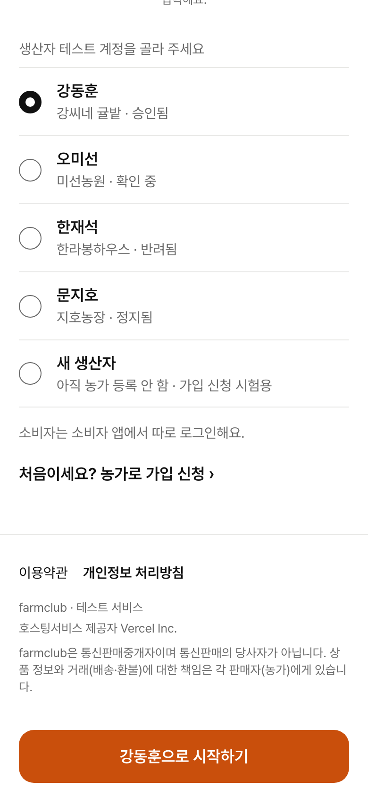
목록 아래 안내를 「소비자는 소비자 앱에서 따로 로그인해요.」로(소비자 쪽 「농가는 생산자 앱에서 따로 로그인해요.」와 짝).
'처음이세요? 농가로 가입 신청 ›'은 그 아래, 푸터 위 그대로. 하단 바 '○○으로 시작하기'(56, 강조색)도 그대로.
버튼 위치는 그대로, 운영의 글만 있는 고정 바는 선택 정리
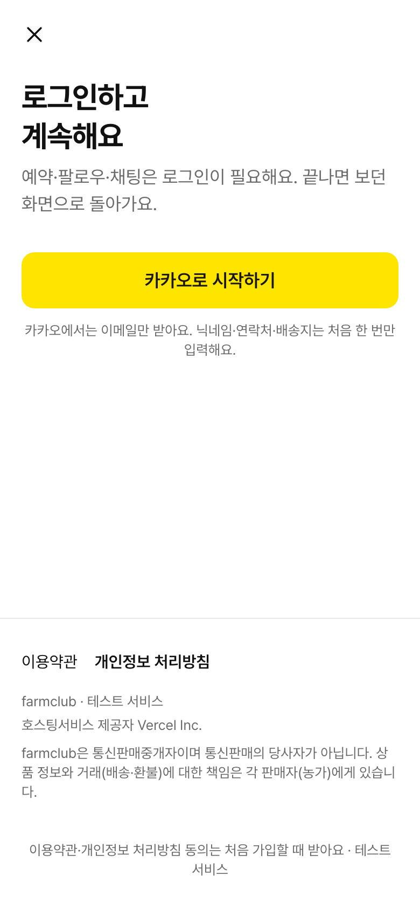
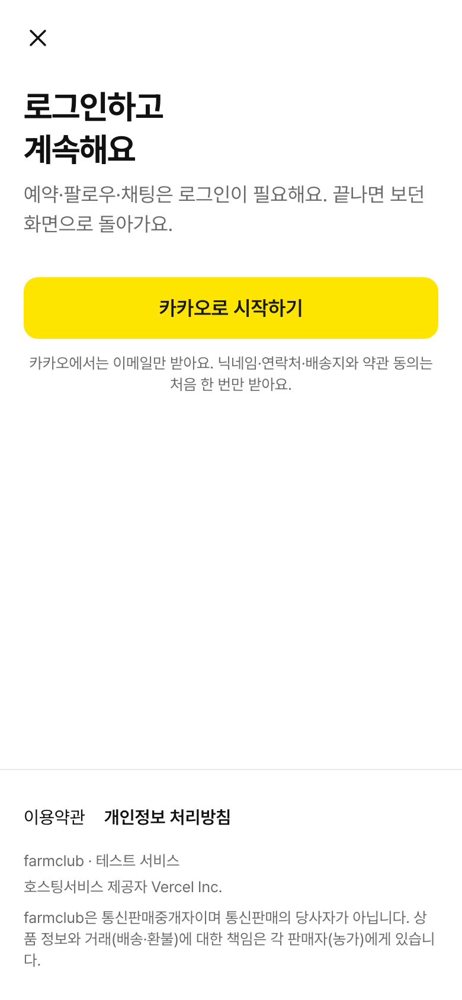
그대로: 닫기, 제목 28/36, 설명, 버튼(52) 위 32, 버튼 아래 13 안내.
선택: 하단 바의 동의 안내를 버튼 아래 글에 합친다 → 「카카오에서는 이메일만 받아요. 닉네임·연락처·배송지와 약관 동의는 처음 한 번만 받아요.」 그러면 운영에서는 두 앱 모두 고정 바가 없다. 안 하면 소비자는 지금 그대로.
평가 모드(아래 두 장)는 바꾸지 않는다. 생산자 쪽을 이 모양에 맞춘다.
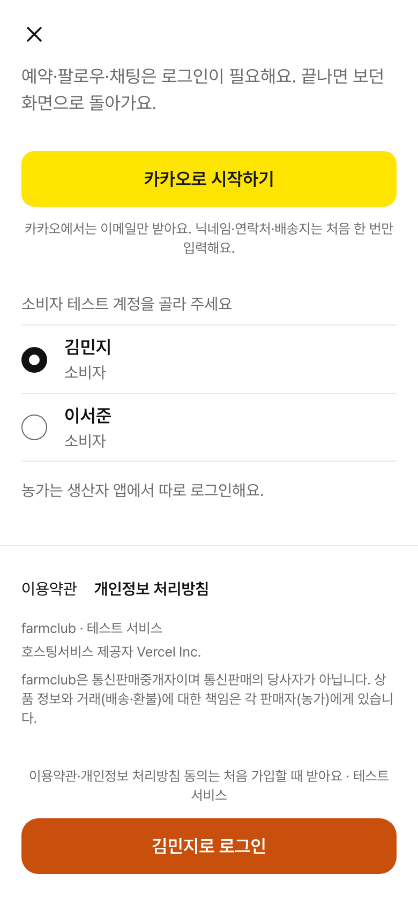
AFTER · 구현 화면
마지막 장은 테스트 로그인이 꺼진 운영(404)에서 기기에 평가 표시가 남아 있을 때다. 표시를 지우고 카카오만 보인다(전에는 '지금은 로그인할 수 없어요').

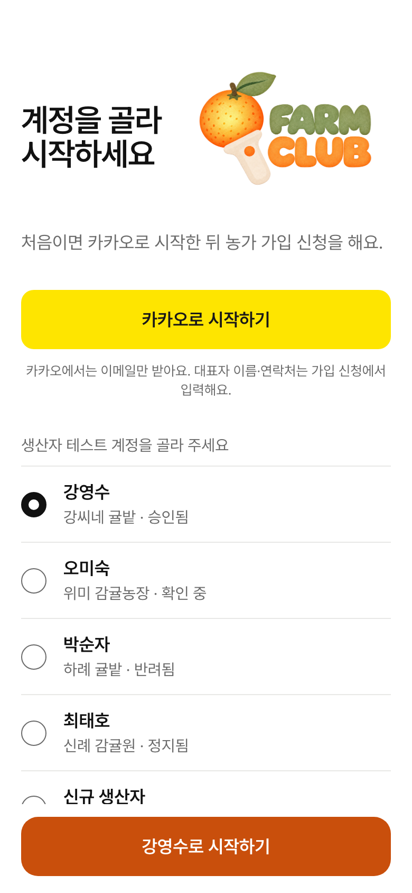
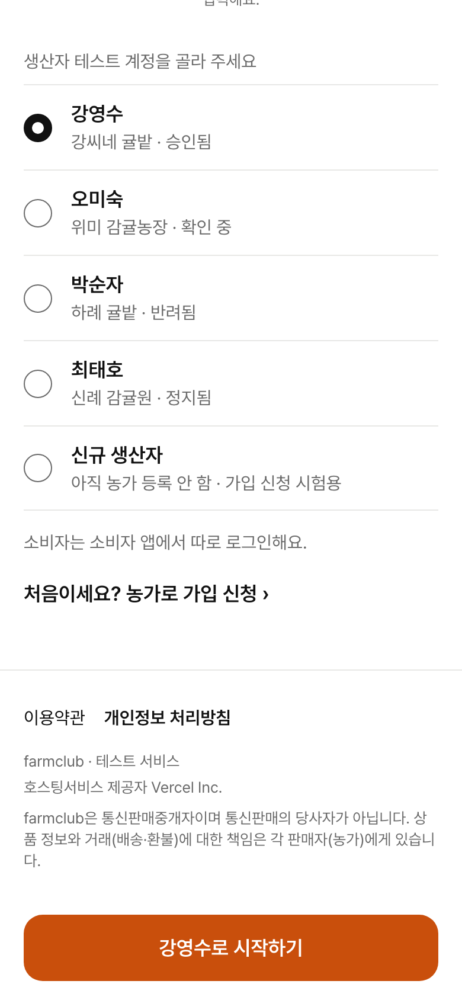
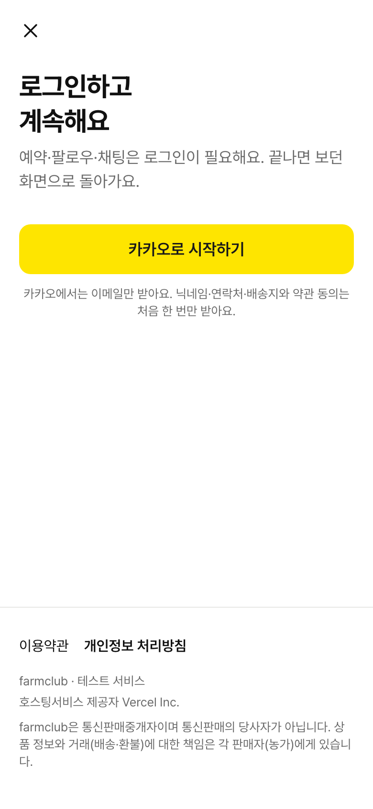
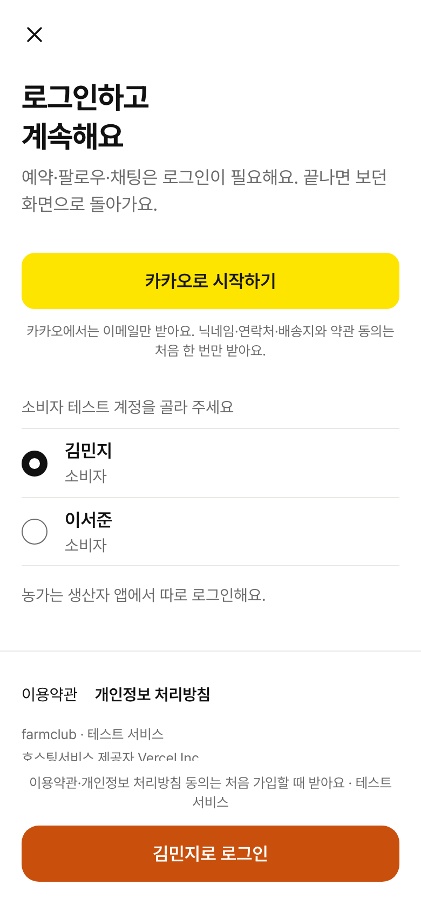
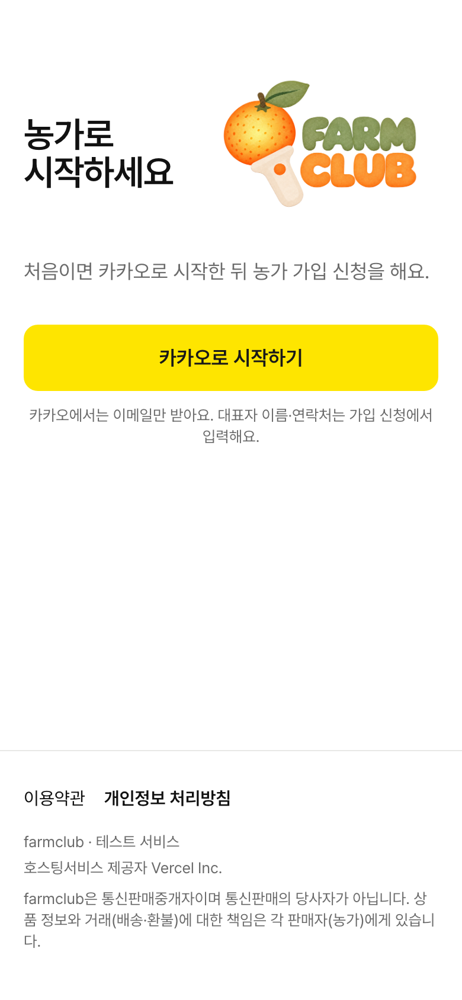
상태별 배치 (생산자 SCR-19)
| 상태 | 본문 (위에서 아래) | 하단 고정 바 | 푸터 |
|---|---|---|---|
| 운영 · 카카오만 | 제목+로고 · 설명 한 문장 · 카카오 버튼 · 개인정보 안내 13 | 없음 (오류는 버튼 아래 본문) | 화면 맨 아래 |
평가 모드 (?evaluator=1·평가용 빌드) | 제목+로고 · 설명 · 카카오 버튼 · 개인정보 안내 · 이름표 · 계정 목록 · 「소비자는 소비자 앱에서…」 · '처음이세요?…' | '○○으로 시작하기' (+오류) | 목록 아래, 바 위 |
Mock (npm run dev) | 평가 모드와 같음. 버튼 아래 글은 「Mock: 카카오로 시작하면 농가 없는 새 생산자로 들어가요」 그대로, 설명 문단 없음(지금과 같음) | '○○으로 시작하기' | 목록 아래, 바 위 |
| 카카오 꺼짐 (CI·Mock 플래그만) | 제목 · 계정 목록 · 안내 · '처음이세요?…' (카카오 버튼 없음) | '○○으로 시작하기' | 그대로 |
| 설정 불러오는 중 | 제목만 (지금과 같음) | 없음 | 화면 맨 아래 |
문서 변경 (개발 PR에서 함께)
| 문서 | 고칠 곳 |
|---|---|
| docs/spec/screens.md | SCR-19: 카카오 버튼은 설명 바로 아래 본문, 운영에서 하단 바 없음, 버튼 아래 개인정보 안내, 평가 모드 이름표·안내 문구. SCR-05: (선택안을 고르면) 하단 바 문구를 버튼 아래로. |
| docs/wiki/ | 로그인 화면 영문 요약에 위치 한 줄(있으면) |
| Figma v6 | 생산자 로그인 프레임(운영·평가) 버튼 위치, 소비자 로그인(선택안일 때). 못 하면 PR Figma: 줄에 후속 이슈 |
| e2e / scripts/test-*.mjs | login-bottom-bar 안에서 카카오 버튼을 찾는 테스트가 있으면 본문 기준으로 바꾼다(지우지 않음) |
박현 확인 질문
- ① 소비자 선택안: 운영에서 소비자 하단 바(글 한 줄)를 없애고 버튼 아래 글에 합칠까? (제안: 합친다. 안 하면 소비자는 아무것도 안 바뀜)
- ② 생산자 문구 나누기: 설명 문단의 개인정보 문장을 버튼 아래 13으로 옮기는 것(문구 내용은 같음) 괜찮은지.
- ③ 평가 모드 안내 문구: 「생산자 테스트 계정만 보여요. 소비자 계정과는 따로예요.」 → 이름표 「생산자 테스트 계정을 골라 주세요」 + 「소비자는 소비자 앱에서 따로 로그인해요.」로 소비자와 짝 맞추기.
- ④ '처음이세요? 농가로 가입 신청 ›': 평가 모드 전용으로 목록 아래 그대로 둔다(제안). 목록의 '새 생산자'와 겹치니 지울지?
- ⑤ 생산자 동의 안내: 소비자는 「약관 동의는 처음 가입할 때 받아요」가 있고 생산자는 없다(생산자도 로그인 뒤
/consent). 생산자 버튼 아래에도 넣을지? (제안: 이번엔 안 넣음)